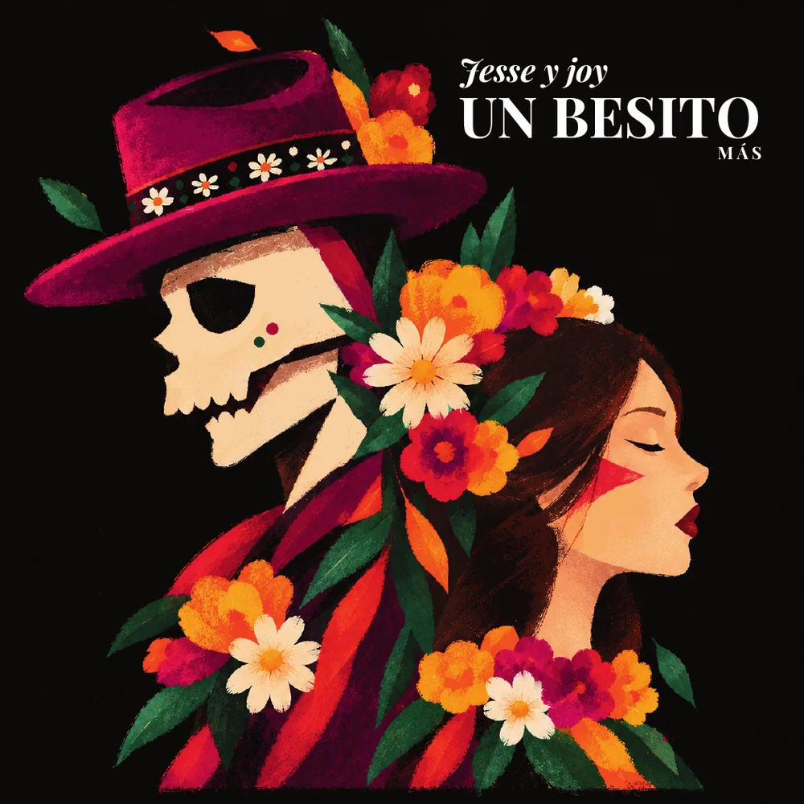
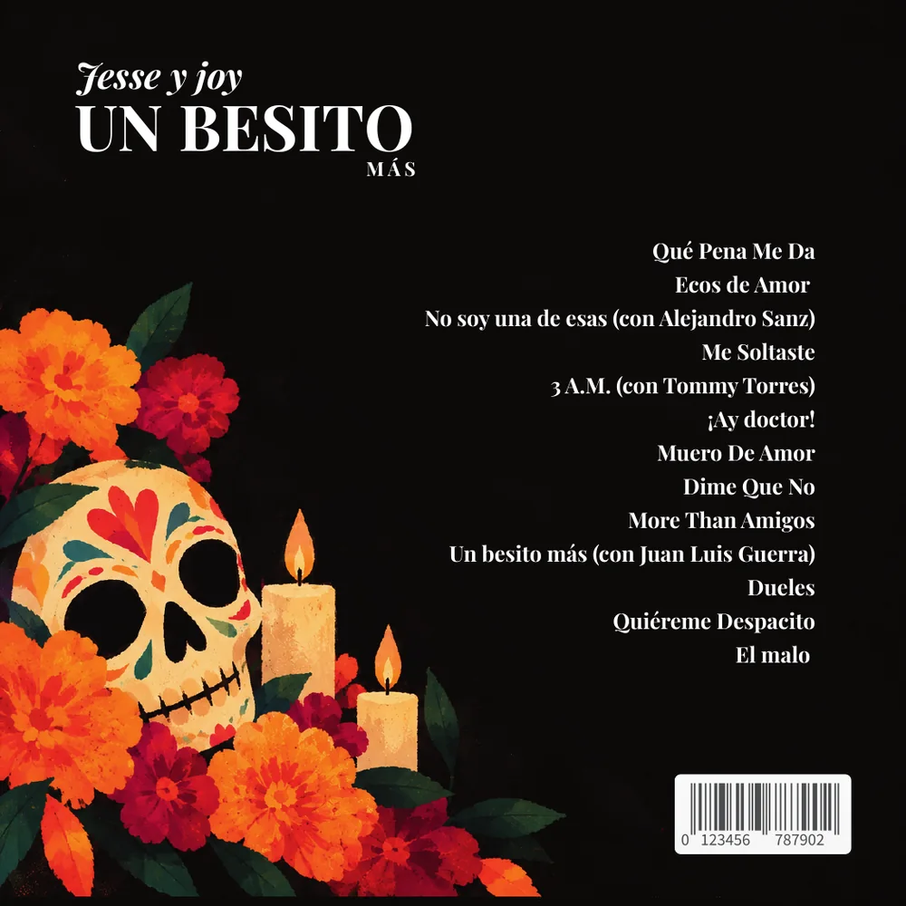
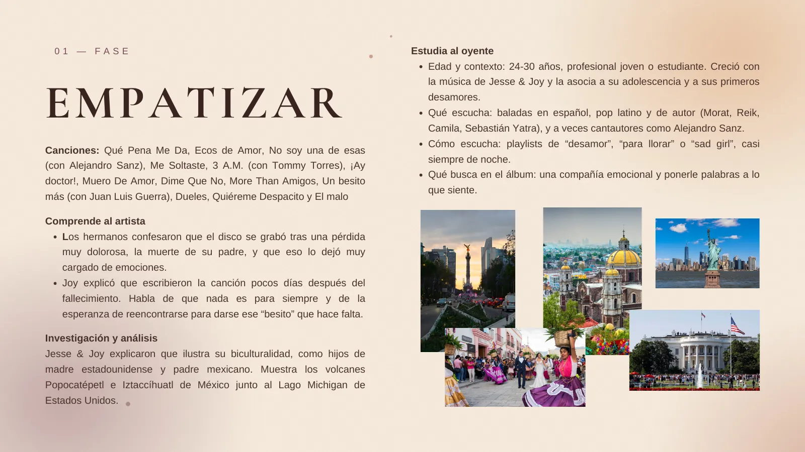
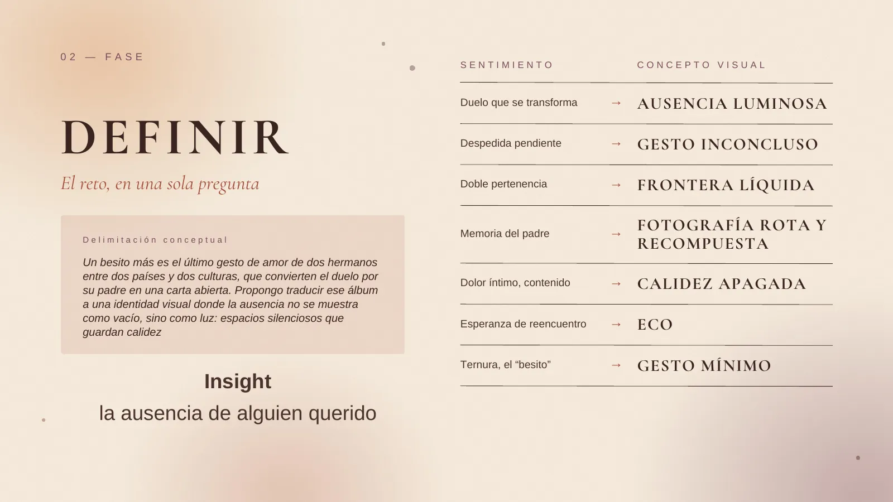
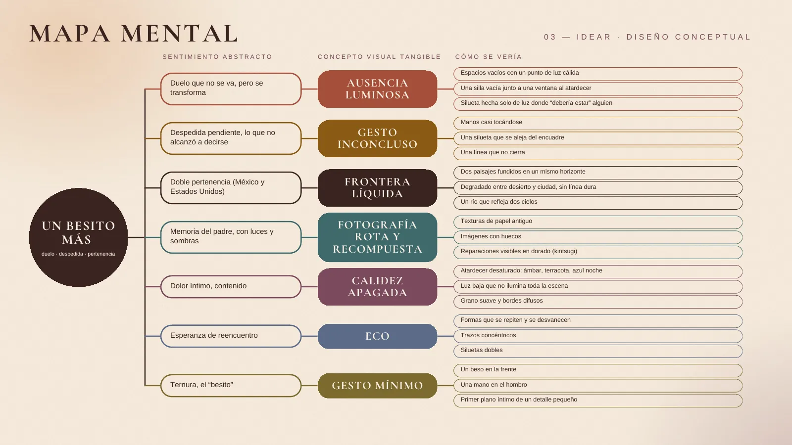
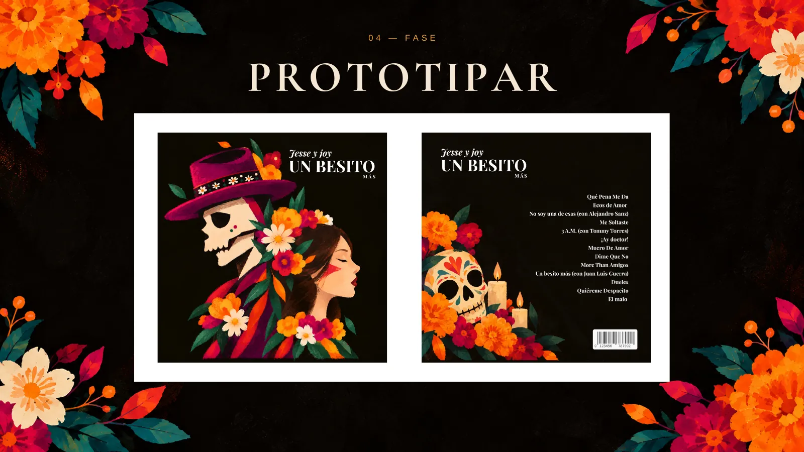
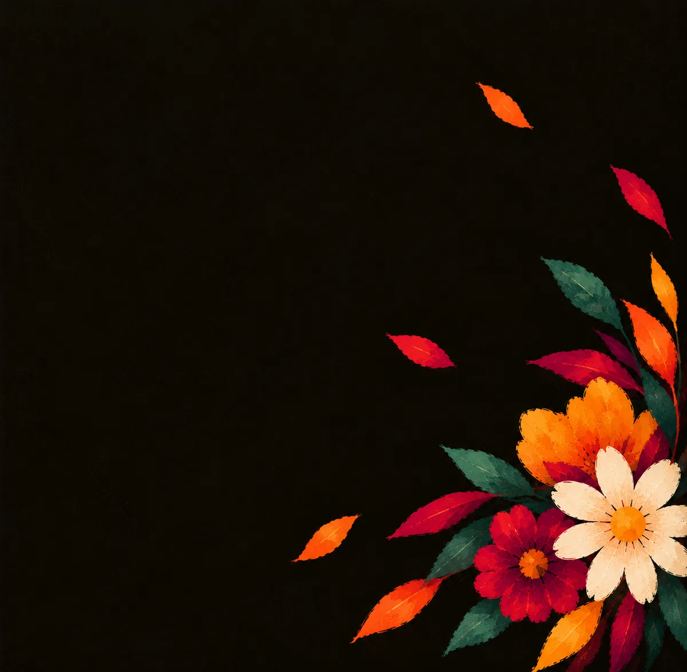
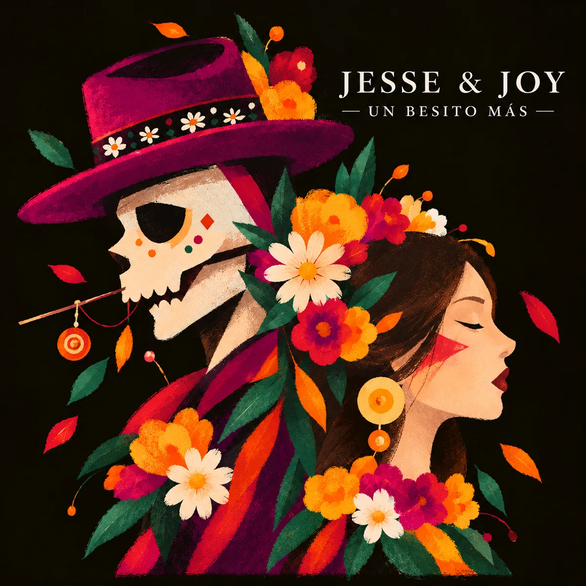

Jesse & Joy · Portada y contraportada
Un besito más
Jesse & Joy grabaron este álbum después de la muerte de su padre. Mi propuesta fue que la ausencia no se viera como un vacío, sino como luz.

Caso de estudio · Diseño conceptual
Cómo convertí un álbum nacido del duelo en una portada que se siente como una ofrenda iluminada. Pasa las páginas deslizando, con las flechas o con el teclado.
Jesse & Joy · Portada y contraportada
Jesse & Joy grabaron este álbum después de la muerte de su padre. Mi propuesta fue que la ausencia no se viera como un vacío, sino como luz.

Ficha técnica
| Proyecto | Portada y contraportada del disco “Un besito más” |
| Artista | Jesse & Joy |
| Contexto | Diseño Conceptual · segundo parcial |
| Año | Octubre de 2026 |
| Disciplina | Diseño conceptual, ilustración y diseño editorial |
| Herramientas | Krita y Canva |
| Mi rol | Proyecto individual: investigación, concepto, ilustración y diseño |
| Método | Design thinking: empatizar, definir, idear, prototipar y testear |

Acto 1 · El conflicto y el brief
Jesse & Joy escribieron la canción que da nombre al álbum pocos días después de perder a su padre. Habla de que nada es para siempre y de la esperanza de reencontrarse para darse ese “besito” que quedó pendiente.
Personas de 24 a 30 años que crecieron con el dúo y lo asocian a sus primeros desamores. Escuchan baladas y pop latino en playlists de desamor, casi siempre de noche, y buscan una compañía que le ponga palabras a lo que sienten.
Diseñar una portada y una contraportada que tradujeran ese duelo y la doble pertenencia de los hermanos —hijos de madre estadounidense y padre mexicano— sin caer en una tristeza literal.

Investigación e interpretación
Investigué la historia del álbum y su portada original, que une los volcanes Popocatépetl e Iztaccíhuatl con el lago Michigan. Después traduje cada emoción en un concepto visual concreto:
| Duelo que se transforma | Ausencia luminosa |
| Despedida pendiente | Gesto inconcluso |
| Doble pertenencia | Frontera líquida |
| Memoria del padre | Fotografía rota y recompuesta |
| Dolor íntimo y contenido | Calidez apagada |
| Esperanza de reencuentro | Eco |
| Ternura, el “besito” | Gesto mínimo |
Insight: el disco no habla de la muerte, sino de la ausencia de alguien querido.

Acto 2 · El proceso
Para cada concepto hice una lluvia de ideas: una silla vacía junto a una ventana al atardecer, unas manos que casi se tocan, dos paisajes fundidos en un mismo horizonte, reparaciones doradas como en el kintsugi, un beso en la frente.
El mapa mental ordenó todo en tres columnas: el sentimiento, el concepto visual y cómo se vería. Toca una lámina para verla en grande.

Acto 2 · La transformación
El moodboard fijó el tono: atardeceres desaturados en ámbar, terracota y azul noche, grano suave y luz baja. En los bocetos probé distintas composiciones hasta encontrar la que reunía todos los conceptos.
La clave fue el Día de Muertos, una tradición mexicana que une la muerte con el amor y recuerda a quien se fue sin borrarlo.

Acto 3 · El desenlace
Dibujé una calavera y una mujer de perfil, muy cerca pero sin tocarse, con flores que cruzan de una a otra: el beso que ya no se puede dar y la frontera borrosa entre los vivos y los muertos.
El fondo negro evoca el luto y la noche, y hace que los naranjas del cempasúchil, los magentas y los rojos brillen como velas. El verde de las hojas es el único contrapunto frío.
Elegí una serif de alto contraste: “Jesse y Joy” en cursiva, como una firma; “UN BESITO” grande y en blanco; y “MÁS” pequeño y espaciado, como un susurro de lo que quedó pendiente.

Acto 3 · El impacto
Aplicada al disco, la portada está pensada para leerse en tres escalas: de lejos, en miniatura dentro de una aplicación de música y en detalle, cuando el disco está en las manos.
Cada decisión de color y de tipografía nace de la investigación: la ausencia convertida en luz, la ofrenda en lugar del vacío.
En la evaluación, el concepto y la solución visual se consideraron sólidos. La observación principal fue que faltaba mostrar con más claridad cómo filtré las ideas y por qué elegí cada camino. Me quedo con ese aprendizaje: documentar la toma de decisiones con la misma intención que la pieza final, para que se vea no solo el resultado, sino el criterio que hay detrás.

Desliza con el dedo, arrastra con el mouse o usa ← →